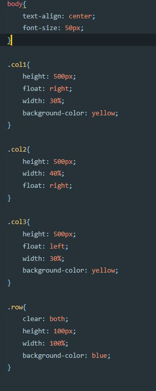

Лємєшова С. С,
Лємєшова С. С,  Тітов Є. О,
Тітов Є. О,  Юдаков О. С.
Юдаков О. С. 
ЛАБОРАТОРНА РОБОТА №3
Тема: БЛОЧНА ВЕРСТКА HTML-ДОКУМЕНТУ ЗА МАКЕТОМ
Мета: придбати практичні навички роботи верстки сторінок засобами CSS, верстки на основі плаваючих елементів, з’ясувати переваги та недоліки типів макетів веб-сторінок
Розташування лабораторної: GitHub Лабороторна робота №2
Зовнішній вигляд макетів:
- Вавринюк
- Лємєшова
- Тітов
- Юдаков
HTML-код макету:
Тітов
Розмітка сторінки за допомогою таблиці
- HTML-код
- CSS-код
- Результат

Розмітка сторінки за допомогою плаваючих блоків
- HTML-код
- CSS-код
- Результат


Висновки: Протягом цієї лабораторної роботи ми придбали практичні навички роботи верстки сторінок засобами CSS, верстки на основі плаваючих елементів, з’ясували переваги та недоліки типів макетів веб-сторінок